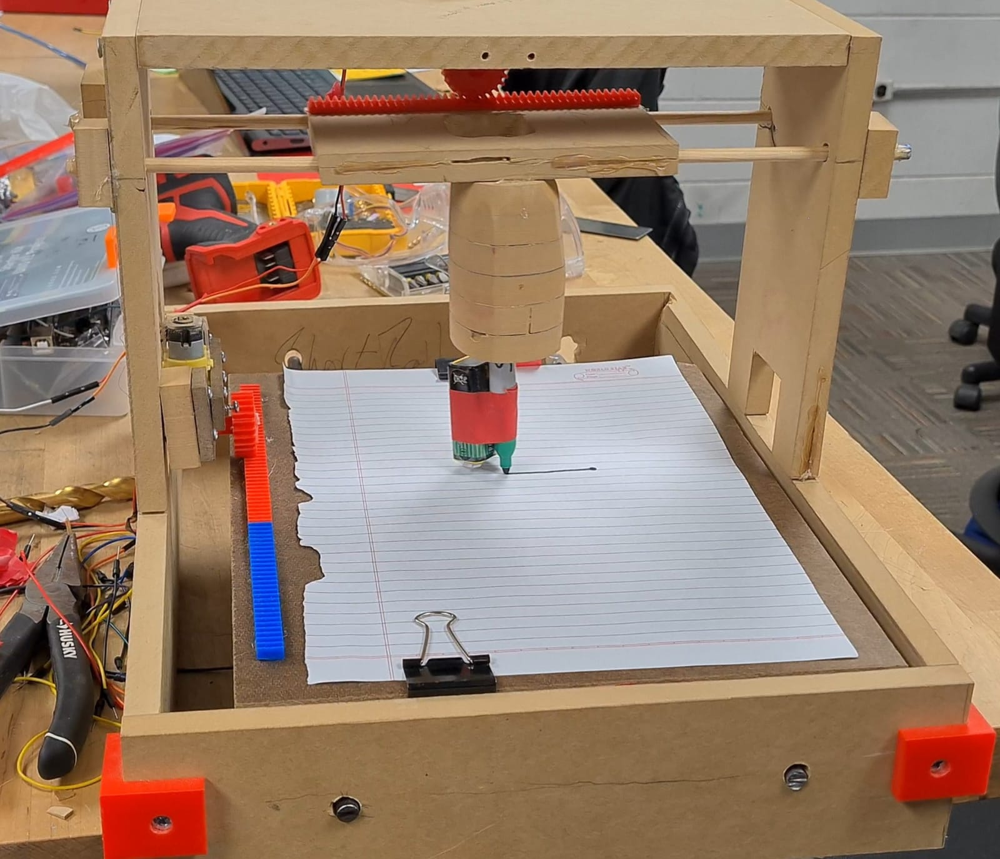
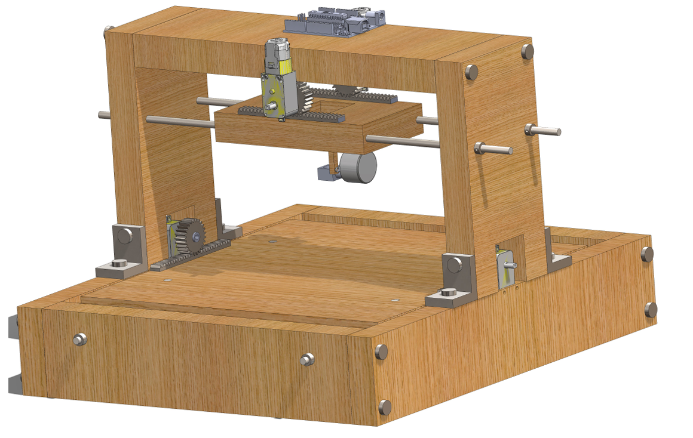

PROJECT 05
UIC · ME 250 · Aug 2021 – Dec 2021
Autonomous Writing Device
A handmade automated writing device built from MDF, 3D-printed parts and a rack-and-pinion mechanism, controlled by an Arduino UNO programmed in C++, which draws shapes and letters.

Overview
The idea
Like a 3D printer without the Z axis: a 2-axis device that moves a pen over paper.
Approach
How it was built
Planning
- Before designing, the team did a black box model, Gantt charts and the other preliminary design steps.
Mechanical design
Entire CAD model: Vishek
- Designed and refined iterations in SolidWorks.
- Mechanical structure of MDF and 3D-printed components, with a 3D-printed rack-and-pinion mechanism for actuation.
- Two axes (X–Y), no Z axis: an MDF gantry-style frame over an MDF base that holds the paper, with a carriage carrying the pen tool.

Fabrication
Vishek
- Cut and drilled all the MDF structural parts in the class machine shop.
- 3D printed the custom parts.
Electronics and software
Vishek and one teammate
- Programmed in C++ on an Arduino UNO microcontroller.
- Separate programs drew different shapes and letters, such as a square.
Demo
Watch it draw
Results
Outcome
- The final device successfully drew shapes and letters with stability, and operated at the push of a button.
- Each pre-programmed drawing ran when its code was started; the square worked best.
Feedback
- Presented the project to UIC professors, receiving feedback on optimizing the design for reduced mass and cost.